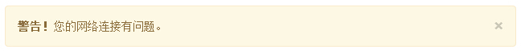
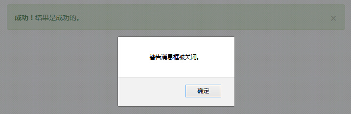

Bootstrap 警告框（Alert）
警告框（Alert）消息大多是用来想终端用户显示诸如警告或确认消息的信息。使用警告框（Alert）插件，您可以向所有的警告框消息添加可取消（dismiss）功能。
如果您想要单独引用该插件的功能，那么您需要引用 alert.js。或者，正如 Bootstrap 插件概览 一章中所提到，您可以引用 bootstrap.js 或压缩版的 bootstrap.min.js。
用法
您可以有以下两种方式启用警告框的可取消（dismissal）功能：
- 通过 data 属性：通过数据 API（Data API）添加可取消功能，只需要向关闭按钮添加 data-dismiss="alert"，就会自动为警告框添加关闭功能。
<a class="close" data-dismiss="alert" href="#" aria-hidden="true"> × </a>
- 通过 JavaScript：通过 JavaScript 添加可取消功能：
$(".alert").alert()
实例
下面的实例演示了通过 data 属性使用警告框（Alert）插件的用法。
<!DOCTYPE html> <html> <head> <title>Bootstrap 实例 - 警告框（Alert）插件</title> <link href="/bootstrap/css/bootstrap.min.css" rel="stylesheet"> <script src="/scripts/jquery.min.js"></script> <script src="/bootstrap/js/bootstrap.min.js"></script> </head> <body> <div class="alert alert-warning"> <a href="#" class="close" data-dismiss="alert"> × </a> <strong>警告！</strong>您的网络连接有问题。 </div> </body> </html>
结果如下所示：

选项
没有选项。
方法
下面是一些警告框（Alert）插件中有用的方法：
| 方法 | 描述 | 实例 |
|---|---|---|
| .alert() | 该方法让所有的警告框都带有关闭功能。 | $('#identifier').alert(); |
| Close Method .alert('close') | 关闭所有的警告框。 | $('#identifier').alert('close'); |
实例
下面的实例演示了 .alert() 方法的用法：
<!DOCTYPE html>
<html>
<head>
<title>Bootstrap 实例 - 警告框（Alert）插件 alert() 方法</title>
<link href="/bootstrap/css/bootstrap.min.css" rel="stylesheet">
<script src="/scripts/jquery.min.js"></script>
<script src="/bootstrap/js/bootstrap.min.js"></script>
</head>
<body>
<h3>警告框（Alert）插件 alert() 方法</h3>
<div id="myAlert" class="alert alert-success">
<a href="#" class="close" data-dismiss="alert">×</a>
<strong>成功！</strong>结果是成功的。
</div>
<div id="myAlert" class="alert alert-warning">
<a href="#" class="close" data-dismiss="alert">×</a>
<strong>警告！</strong>您的网络连接有问题。
</div>
<script type="text/javascript">
$(function(){
$(".close").click(function(){
$("#myAlert").alert();
});
});
</script>
</body>
</html>下面的实例演示了 .alert('close') 方法的用法：
<!DOCTYPE html>
<html>
<head>
<title>Bootstrap 实例 - 警告框（Alert）插件 alert('close') 方法</title>
<link href="/bootstrap/css/bootstrap.min.css" rel="stylesheet">
<script src="/scripts/jquery.min.js"></script>
<script src="/bootstrap/js/bootstrap.min.js"></script>
</head>
<body>
<h3>警告框（Alert）插件 alert('close') 方法</h3>
<div id="myAlert" class="alert alert-success">
<a href="#" class="close" data-dismiss="alert">×</a>
<strong>成功！</strong>结果是成功的。
</div>
<div id="myAlert" class="alert alert-warning">
<a href="#" class="close" data-dismiss="alert">×</a>
<strong>警告！</strong>您的网络连接有问题。
</div>
<script type="text/javascript">
$(function(){
$(".close").click(function(){
$("#myAlert").alert('close');
});
});
</script>
</body>
</html>您可以看到所有的警告框都应用了关闭功能，即关闭任意的警告框，其他剩余的警告框也会被关闭。
事件
下表列出了警告框（Alert）插件中要用到的事件。这些事件可在函数中当钩子使用。
| 事件 | 描述 | 实例 |
|---|---|---|
| close.bs.alert | 当调用 close 实例方法时立即触发该事件。 | $('#myalert').bind('close.bs.alert', function () {
// 执行一些动作...
}) |
| closed.bs.alert | 当警告框被关闭时触发该事件（将等待 CSS 过渡效果完成）。 | $('#myalert').bind('closed.bs.alert', function () {
// 执行一些动作...
}) |
实例
下面的实例演示了警告框（Alert）插件的事件：
<!DOCTYPE html>
<html>
<head>
<title>Bootstrap 实例 - 警告框（Alert）插件事件</title>
<link href="/bootstrap/css/bootstrap.min.css" rel="stylesheet">
<script src="/scripts/jquery.min.js"></script>
<script src="/bootstrap/js/bootstrap.min.js"></script>
</head>
<body>
<div id="myAlert" class="alert alert-success">
<a href="#" class="close" data-dismiss="alert">×</a>
<strong>成功！</strong>结果是成功的。
</div>
<script type="text/javascript">
$(function(){
$("#myAlert").bind('closed.bs.alert', function () {
alert("警告消息框被关闭。");
});
});
</script>
</body>
</html>结果如下所示：
